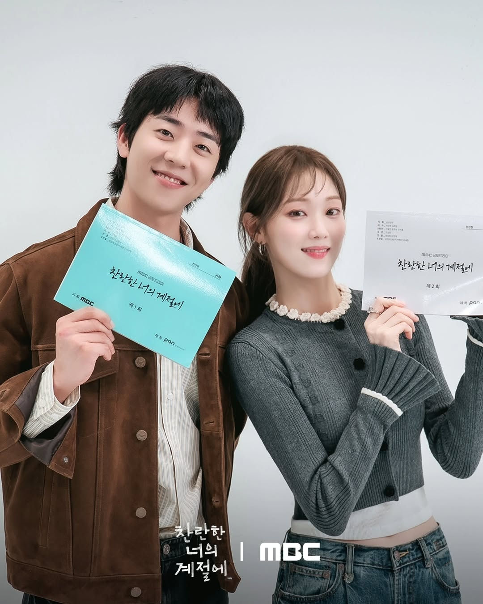
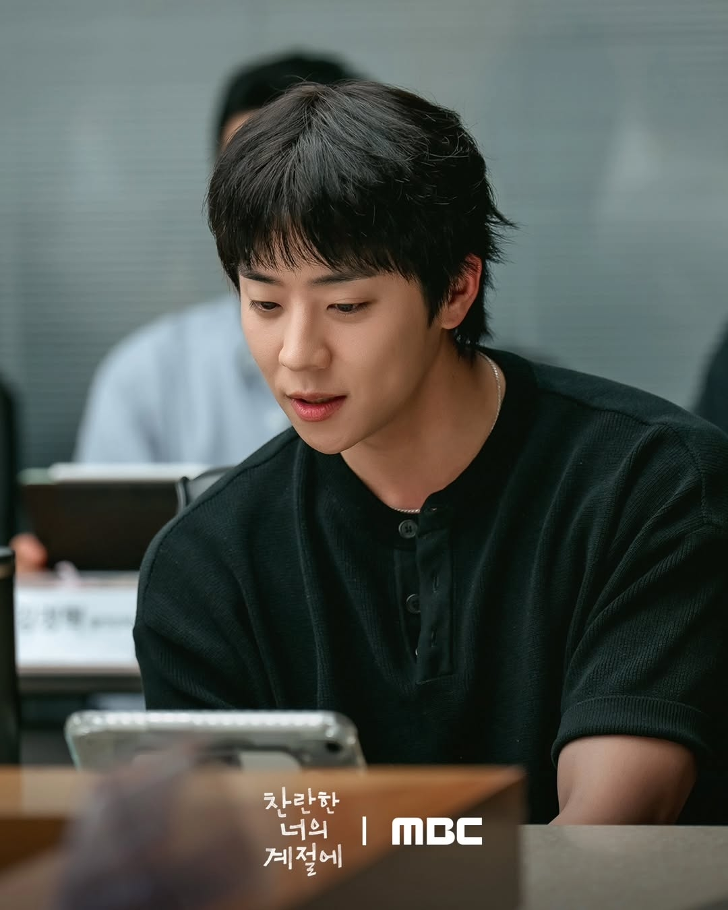
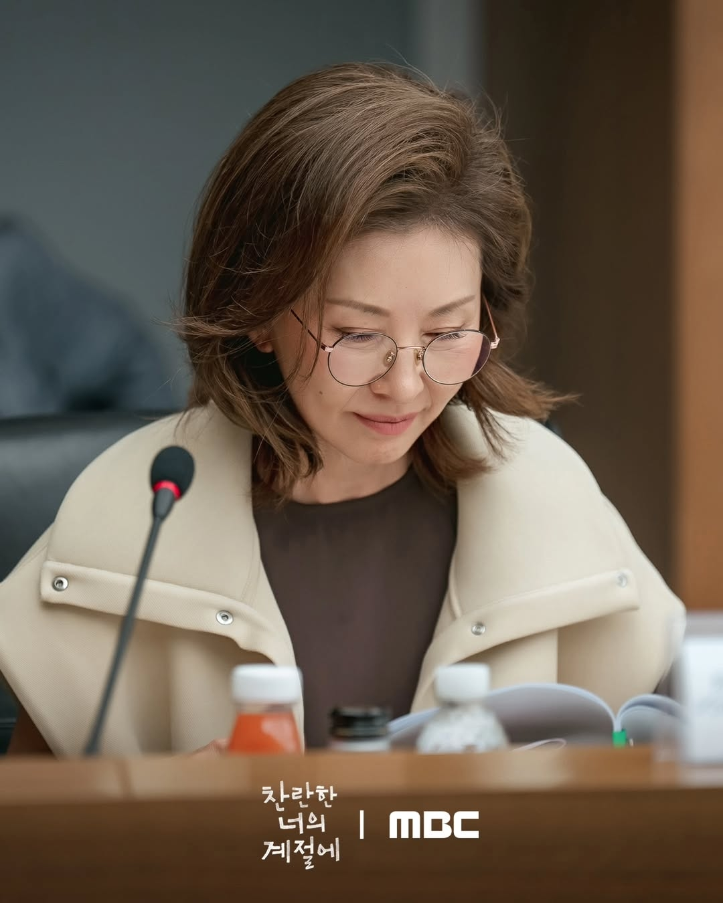
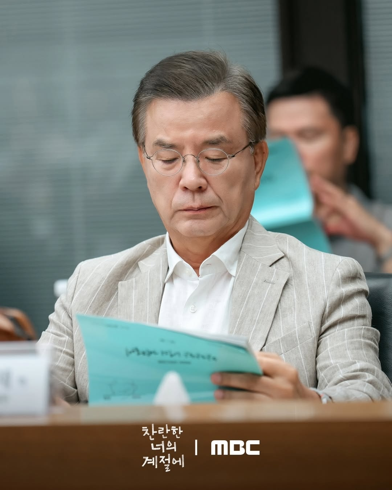
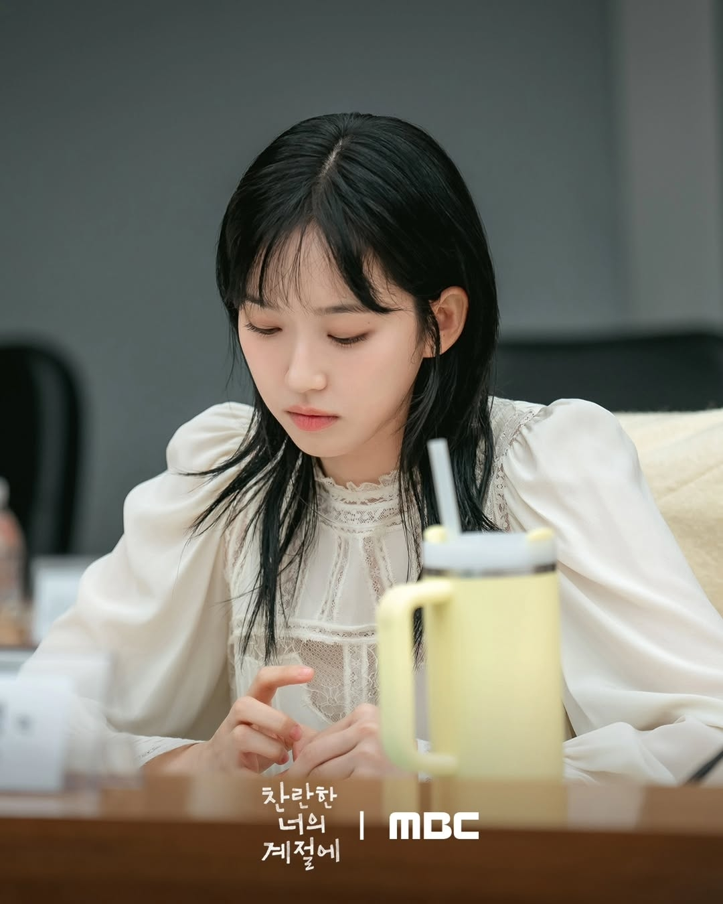
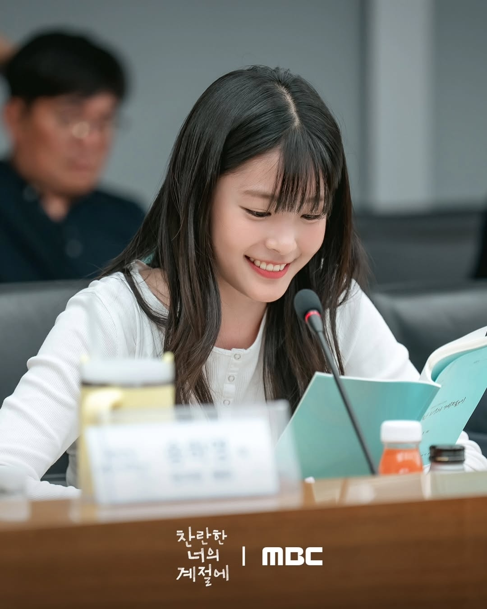
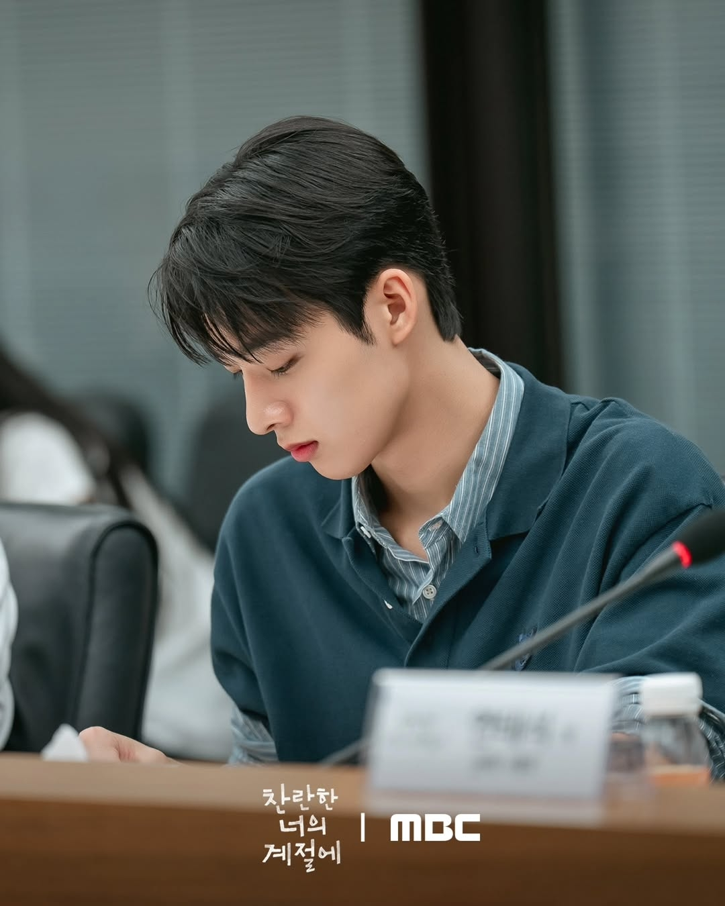
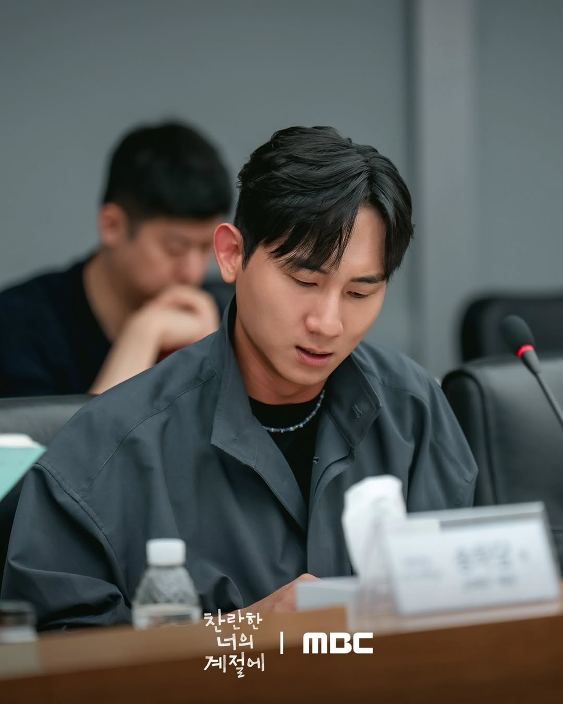

MBC bagikan pembacaan naskah para pemeran untuk drama terbaru "In Your Radiant Season", yang akan tayang bulan depan.
"In Your Radiant Season" mengisahkan cerita Sunwoo Chan, seorang pria yang menjalani setiap hari seperti liburan musim panas yang menyenangkan, dan Song Ha Ran, seorang wanita yang mengurung diri seolah hidup adalah musim dingin yang dingin.
Pembacaan naskah tersebut mempertemukan sutradara Jung Sang Hee, penulis Cho Sung Hee, dan para pemeran termasuk Lee Sung Kyung, Chae Jong Hyeop, Lee Mi Sook, Kang Suk Woo, Han Ji Hyeon, Oh Ye Ju, Kwon Hyuk, Kim Tae Young, dan Jang Yong Won.

Lee Sung Kyung memerankan Song Ha Ran, kakak tertua dari tiga bersaudara dan kepala desainer di Nana Atelier, rumah mode kelas atas terkemuka di negara itu.
Chae Jong Hyeop memerankan Sunwoo Chan, seorang perancang karakter di studio animasi terkenal dunia.

Lee Mi Sook memerankan Kim Na Na, seorang desainer legendaris di industri mode global dan nenek dari tiga bersaudara.

Kang Suk Woo memerankan Park Man Jae, seorang barista yang menjalankan kafe lingkungan "Shim" setelah pensiun dan menambahkan sentuhan lembut dan tulus pada kehidupan sehari-hari.

Disisi lain, Han Ji Hyeon memerankan Song Ha Young, anak tengah dari tiga bersaudara dan seorang desainer junior di Tim Desain 1 Nana Atelier.

Oh Ye Ju memerankan adik bungsu, Song Ha Dam, menunjukkan sisi yang cerdas dan dewasa serta mengisyaratkan dinamika baru di antara ketiga saudara perempuan tersebut.

Dan ketiga karakter terkahir menambah porsi jalan cerita agar lebih menarik.


- Sementara itu, Drama "In Your Radiant Season" akan tayang perdana pada 20 Februari 2026 pukul 21.50 KST.
~~
Source:
MBC /Soompi